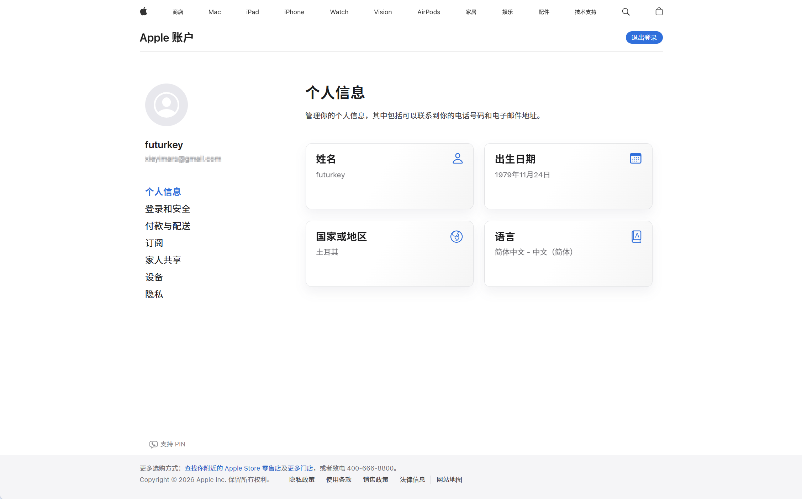
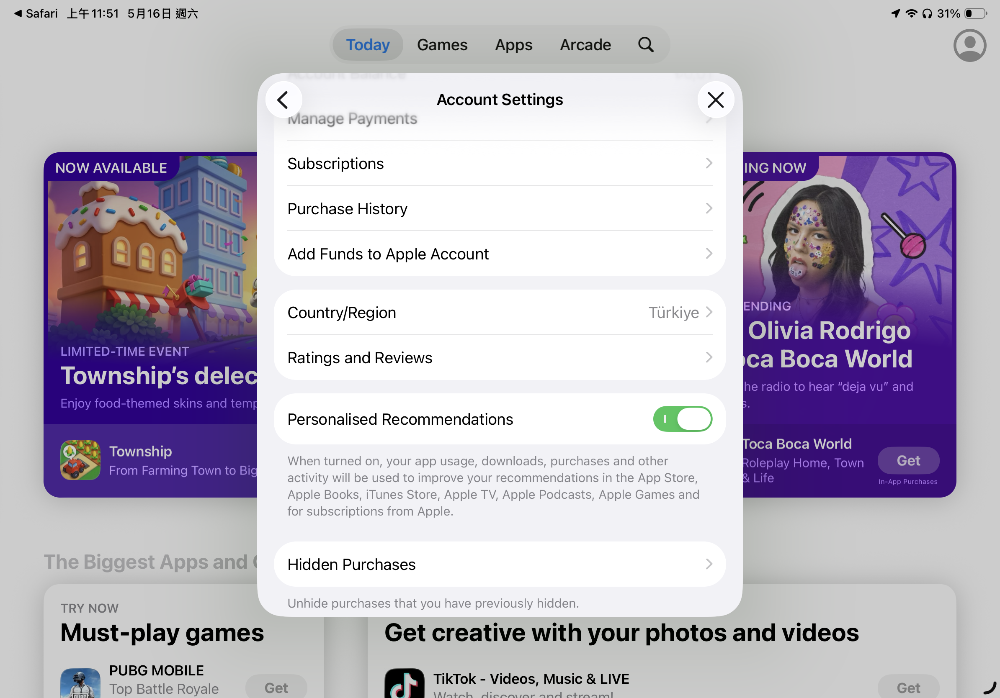
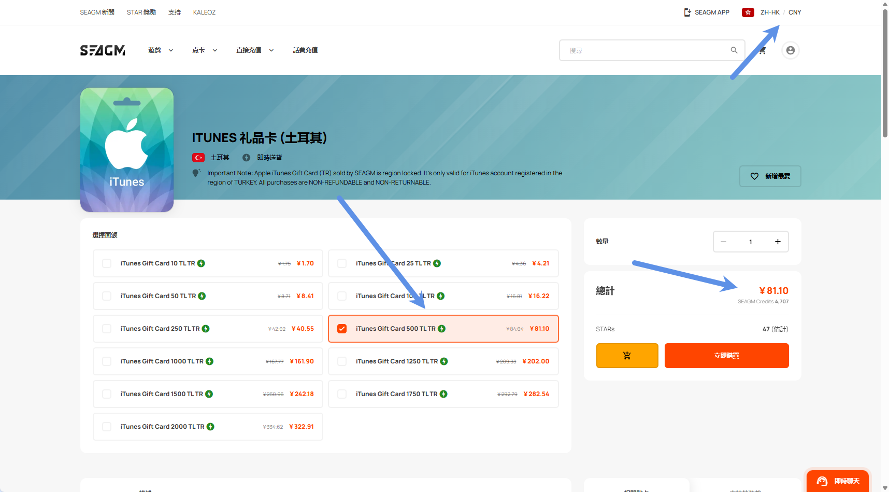
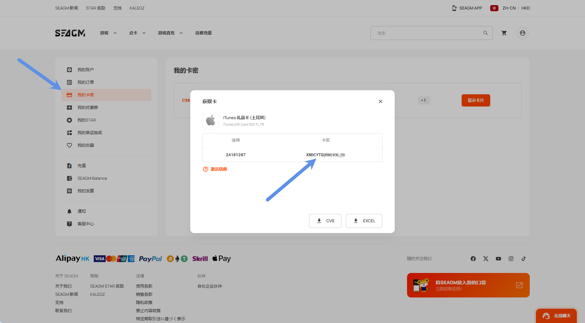
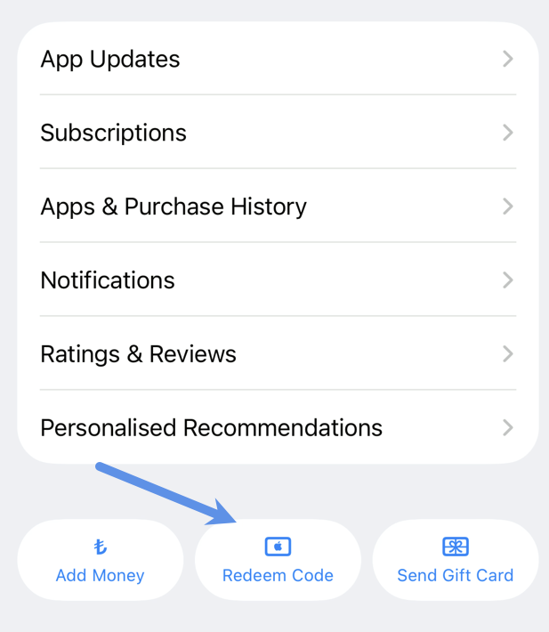
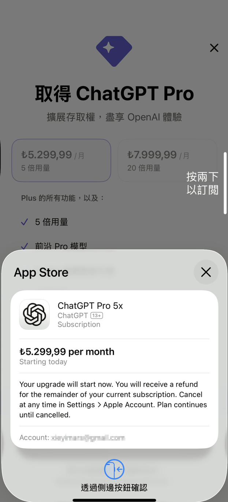
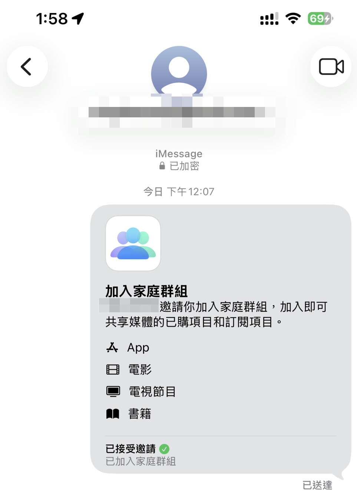

最近重新折腾了一遍土耳其区 Apple ID，并成功完成：
- 注册土耳其 Apple ID
- 购买土区苹果礼品卡
- 充值 Apple 余额
- 通过 iPhone 成功订阅 ChatGPT Plus
- 附： 将土区账号加入中国区 Apple 家庭（以备后续共享土区的 iCloud 订阅）
整个流程比想象中稳定很多，所以这里把完整过程整理成一篇教程。
这篇文章主要适用于：
- 想低价订阅 GPT Plus 的用户
- 想长期维护土区 Apple 生态的用户
- 后期可能需要土区 iCloud / Apple One / Arcade 等订阅的用户
注意：本文仅记录个人实操过程与经验。
为什么选择土耳其区？
相比国区、美区等地区：
- 土耳其区订阅价格长期偏低
- Apple 礼品卡获取方便
- GPT Plus 可直接通过 App Store 内购
- 后期还能扩展更多 Apple 服务
而且：
GPT 登录账号不需要是土区账号。
真正需要土区的，其实只是：
- 用于支付的 Apple ID
所以实际使用体验几乎没有影响。你可以继续保留注册好的 GPT 账号。
前期准备
开始之前，需要准备以下内容。
1. 一个全新的邮箱
要求：
- 没注册过 Apple ID
- 推荐 Gmail / Outlook
2. 一个手机号
最好：
- 没绑定过 Apple ID
但实际上：
- 国内手机号也能正常注册
- 即便绑定过 Apple ID，大多数情况下也能用
属于“看运气”的部分。
3. 一份土耳其地址信息
这里推荐直接使用在线生成器：
https://1ktools.com/zh-cn/tools/developer/turkey-address-generator
随机生成一份即可。
后续：
- 礼品卡购买
- Apple 付款信息
都可能会用到。
4. 一台 Apple 设备
支持：
- iPhone
- iPad
- Mac
但这里有一个重点：
GPT 订阅的最终支付必须使用移动设备完成。
也就是说：
- Mac 可以注册
- Mac 可以登录
- 但不能完成 App Store 内购支付
所以最终还是需要：
- iPhone
- 或 iPad
一、注册土耳其 Apple ID
1. 打开 Apple 官网
进入：
建议：
- 使用浏览器无痕模式
- 是否开启代理无所谓
我测试：
- 挂代理可以
- 不挂也可以
2. 创建 Apple 账户
进入后点击：
创建你的 Apple 账户
填写时注意：
- 国家选择：土耳其
- 姓名：可使用土耳其地址生成器里的名字
- 出生日期：大于 18 岁即可
- 邮箱：新邮箱
- 手机号：国内手机号即可
3. 验证信息
填写验证码后，正常情况下就能完成注册。
这里会看到：
- 国家和地区已经显示为土耳其
但：
这并不意味着 App Store 已经真正切换到土区。
这是很多人容易踩坑的地方。

二、真正切换 App Store 到土耳其区（关键步骤）
很多人：
- 明明注册的是土区账号
- 结果登录 App Store 后又跳回中国区
原因是：
App Store 地区并没有真正重置。
这里推荐使用：
使用 App Store 地区跳转链接（强烈推荐）
| 地区 | 快捷跳转链接 |
|---|---|
| 美国 | itms-apps://itunes.apple.com/WebObjects/MZStore.woa/wa/resetAndRedirect?dsf=143441&cc=us |
| 日本 | itms-apps://itunes.apple.com/WebObjects/MZStore.woa/wa/resetAndRedirect?dsf=143462&cc=jp |
| 韩国 | itms-apps://itunes.apple.com/WebObjects/MZStore.woa/wa/resetAndRedirect?dsf=143466&cc=kr |
| 香港 | itms-apps://itunes.apple.com/WebObjects/MZStore.woa/wa/resetAndRedirect?dsf=143463&cc=hk |
| 尼日利亚 | itms-apps://itunes.apple.com/WebObjects/MZStore.woa/wa/resetAndRedirect?dsf=143561&cc=ng |
| 土耳其 | itms-apps://itunes.apple.com/WebObjects/MZStore.woa/wa/resetAndRedirect?dsf=143480&cc=tr |
| 埃及 | itms-apps://itunes.apple.com/WebObjects/MZStore.woa/wa/resetAndRedirect?dsf=143516&cc=eg |
| 印度 | itms-apps://itunes.apple.com/WebObjects/MZStore.woa/wa/resetAndRedirect?dsf=143467&cc=in |
| 阿根廷 | itms-apps://itunes.apple.com/WebObjects/MZStore.woa/wa/resetAndRedirect?dsf=143505&cc=ar |
1. 退出当前 App Store 账号
路径：
App Store → 头像 → 退出登录
注意：
- 这里只退出 App Store
- 不需要退出 iCloud
2. 使用 Safari 打开土区跳转链接
直接复制到 Safari：
itms-apps://itunes.apple.com/WebObjects/MZStore.woa/wa/resetAndRedirect?dsf=143480&cc=tr
Safari 会自动跳转到：
- 土耳其区 App Store
3. 直接登录刚注册的土区账号
登录后检查：
- App Store 地区是否为 Turkey（土耳其）
确认无误后：
说明土区 Apple ID 已真正注册成功。

三、购买土耳其 Apple 礼品卡
接下来需要给账号充值。
这里推荐两种方式：
方案一：正规虚拟卡平台（推荐）
推荐：
其中：
- SEAGM 支持支付宝
- 对国内用户更方便
所以我这里直接使用 SEAGM。
方案二：国内二手平台
比如：
- 小黄鱼
- 其他电商平台
不太推荐。
原因：
- 来源不稳定
- 容易涉及灰产卡
- 有一定封号风险
四、购买礼品卡并充值
1. 使用支持支付宝的 SEAGM 购买礼品卡
建议：
- 网站语言切换中文
- 货币切换人民币
这样可以直接：
- 支付宝扫码付款

2. 获取礼品卡代码
付款完成后：
我的卡密 → 显示卡片
即可看到兑换码。

3. App Store 兑换礼品卡
路径：
App Store → 头像 → 最底部 → 兑换礼品卡或代码
输入礼品卡代码即可。
充值成功后：
- Apple 余额会显示对应里拉金额

五、关于付款信息：不需要提前选择 None
这里需要特别说明一个很多教程都会提到的问题。
网上不少教程会说：
注册完土区 Apple ID 后，需要先去添加付款信息，并且付款方式选择 None。
但实际操作中，经常会遇到：
- 找不到 None 选项
- 无法选择 None
- 页面要求补充付款信息
- 填完后仍然无法保存
其实这一步完全可以不用提前处理。
我的实际流程是：
不需要注册完 Apple ID 后马上去设置付款方式，也不需要纠结有没有 None。
只需要先完成：
- 土区 Apple ID 注册
- App Store 切换到土耳其区
- 礼品卡充值
然后直接打开 ChatGPT App 订阅 Plus。
当你点击订阅时，系统会自动弹出付款信息填写页面。
这时候不需要选择 None，只需要简单填写土耳其地址信息即可。
地址可以继续使用前面生成的土耳其地址。
填写完成后，系统会直接从 Apple ID 余额中扣款完成订阅。
六、订阅 ChatGPT Plus
充值完成后：
直接打开 ChatGPT App。
然后：
设置 → Upgrade → Subscribe
即可完成订阅。
如果系统弹出付款信息页面：
- 不需要选择 None
- 不需要绑定银行卡
- 只需要填写土耳其地址信息
- 确认后会优先使用 Apple ID 余额扣款
这里需要再次强调：
GPT 登录账号不需要是土区账号。
真正需要土区的：
只是支付 Apple ID。
我这里之前已经订阅过 Plus，所以用 Pro 做演示。

七、将土区账号加入中国区 Apple 家庭（附加功能）
这一部分：
和 GPT Plus 共享无关
这里真正的意义是：
后续可以共享土区 iCloud / Apple One 等订阅服务。
方案：将土区账号加入中国区 Apple 家庭
正常邀请会提示：
不能将其他地区账号加入家庭。
所以这里推荐两个稳定方法。
方法一：隔空投送邀请
在中国区家庭管理员设备上：
进入：
设置 → Apple ID → 家人共享
然后：
- 点击右上角添加账号
- 选择【邀请他人】
- 使用【隔空投送】
此时：
另一台登录土区账号的设备：
开启：
允许任何人隔空投送
两台设备靠近后：
- 会自动弹出邀请
按提示操作即可。
方法二：iMessage 邀请（更稳定）
步骤基本一样。
区别是：
在邀请方式中选择：
信息（iMessage）
然后：
- 输入土区 Apple ID 邮箱
即可发送邀请。
这个方法实际上更稳定。
因为：
- 隔空投送偶尔失败
- iMessage 成功率更高

最后总结
至此，你已经完成了：
- 土耳其 Apple ID 注册
- App Store 真正切换土区
- 土区礼品卡购买
- Apple 余额充值
- GPT Plus 订阅
- 土区账号加入中国区家庭
整个流程目前依然稳定可用。
如果你后续还准备：
- 开通土区 iCloud+
- Apple One
- Apple Music
- Arcade
那么提前维护一个长期稳定的土区 Apple ID，其实非常值得。
常见问题 FAQ
Q1：必须使用代理吗？
不必须。
我测试：
- 开代理可以
- 不开也能注册
Q2：为什么 Mac 无法支付？
因为 GPT Plus 的 App Store 内购：
目前只能通过移动端完成。
Q3：GPT 账号必须是土区吗？
不需要。
土区只负责：
- Apple 支付
GPT 账号本身没有限制。
Q4：注册完土区 Apple ID 后，必须先添加付款方式并选择 None 吗？
不需要。
很多教程会要求提前设置付款方式，并选择 None。
但实际操作中：
- None 经常不出现
- 可能无法保存
- 容易卡在付款信息页面
更简单的做法是：
注册完成后不用管付款方式，直接充值礼品卡，然后去 ChatGPT App 订阅。
订阅时系统会自动弹出付款信息填写页面。
这时候只需要填写土耳其地址信息即可，不需要选择 None，也不需要绑定银行卡。
Q5：家庭共享是共享 GPT Plus 吗？
不是。
这里只是：
- Apple 家庭共享
主要用于后续：
- iCloud+
- Apple One
- Apple Music 等服务共享。
Q6：土区 Apple ID 会封号吗？
只要：
- 不使用来路不明的黑卡
- 不频繁切换地区
- 不进行异常退款
- 长期稳定使用
一般都比较稳定。
本文使用的是礼品卡充值方式，相对也更加安全。